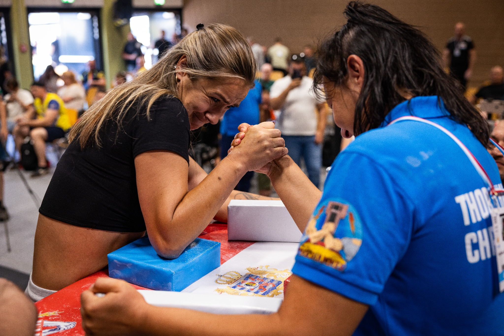

Hook, top roll, press — les trois prises qui définissent votre style de jeu. La technique de prise est la première chose à comprendre avant de poser la main sur la table.
Le bras de fer est souvent perçu comme un sport de force brute — le plus musclé gagne. C'est l'une des idées reçues les plus répandues, et l'une des plus fausses. En pratique, un débutant qui maîtrise les bases techniques peut battre un athlète de salle deux fois plus musclé, simplement parce qu'il exploite les bons leviers au bon moment.
La technique de prise détermine quelle force vous transmettez, dans quelle direction, et avec quel levier mécanique. Il existe trois prises fondamentales : le hook, le top roll et le press. Chacune sollicite des muscles différents et s'adapte à une morphologie différente.
La prise doit être adaptée à votre morphologie. Il n'existe pas de "meilleure prise" absolue — il existe votre meilleure prise.

Trois techniques, trois philosophies de jeu. Chacune cible des groupes musculaires différents et correspond à un profil athlétique distinct.
Le hook est la prise la plus naturelle pour les débutants et la plus efficace pour les athlètes qui ont une force de prise et une force de flexion de poignet développées. Le principe : vous repliez votre poignet vers vous (flexion en pronation) tout en serrant vos doigts comme un crochet autour de ceux de l'adversaire.
En adoptant la position de hook, vous créez un levier de rotation interne. L'avantage du hook : c'est une position de force brute — si vous êtes globalement plus fort aux bons endroits, le hook vous donne un accès direct à cette force sans complexité tactique.
Erreur classique du hook : plier le poignet trop tôt avant le signal. Le hook se déclenche au moment du départ, en explosivité — pas en préparation visible avant le top.
Le top roll est généralement considéré comme la technique la plus complexe du bras de fer — et aussi la plus récompensante une fois maîtrisée. L'objectif est de remonter progressivement sur la main de l'adversaire, réduisant ainsi sa prise à un minimum, tout en exploitant la supination de votre poignet pour le tordre dans une direction de faiblesse.
La clé du top roll est la rotation externe du poignet combinée à la montée des doigts. Le top roll est redoutable contre les hookers : si vous arrivez à monter suffisamment avant qu'ils aient fermé leur crochet, leur force de flexion ne peut plus s'exprimer pleinement.
Erreur classique du top roll : vouloir monter trop vite et perdre le contact de poignet. Le top roll se joue dans les premières demi-secondes du match — explosion + rotation immédiate.
Le press, aussi appelé King's Move, est la prise de domination verticale. Vous utilisez votre épaule et votre dos pour écraser la main adverse vers le bas, en passant au-dessus de sa résistance. C'est une prise qui demande une force d'épaule et de deltoïde importantes, combinée à une puissance dans l'axe vertical.
Dans le press, la direction de force est descendante et vers l'intérieur. C'est une prise physiquement exigeante mais redoutable contre les adversaires qui ont une résistance latérale faible. Son point fort : elle contourne souvent la défense des hookers en passant par-dessus.
Note : le press est souvent la troisième option dans l'arsenal d'un compétiteur avancé, pas le premier choix. Maîtrisez d'abord le hook ou le top roll avant d'y consacrer du temps.
Il n'existe pas de réponse universelle. Le choix de votre technique principale dépend de plusieurs facteurs :
La meilleure façon de découvrir votre technique naturelle : venez à l'entraînement. En quelques séances avec un encadrement, vous identifierez vos points forts mécaniques.
Pour aller plus loin sur la sécurité, consultez notre guide sur les blessures au bras de fer.
On vous aide à trouver votre technique naturelle dès la première table. Première séance gratuite.